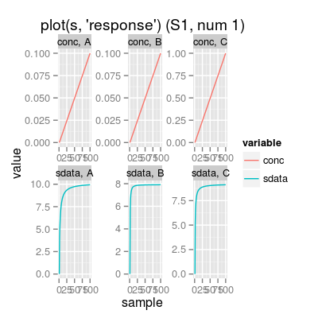

Wrapper to Class Sensor.
Usage
Sensor(num = 1, ...)
Description
Wrapper to Class Sensor.
Examples
# sensor object: default initialization s <- Sensor() # get information about the sensor show(s)Sensor Array of 1 sensors, 3 gases A, B, C - enableSorption TRUE, enableDyn FALSE - Sensor Model (num 1), beta 2, data model 'ispline' - Sorption Model (knum 1), alpha 2.25 - Concentration Noise Model (csd 0.1), noise type 'logconc' - Sensor Noise Model (ssd 0.1), noise type 'randomWalk' - Drift Noise Model (dsd 0.1), common model 'cpc'print(s)SensorArray - enableSorption: TRUE (1) Sensor Model - num 1 - beta 2 - 3 gases A, B, C - (first) data model - method: ispline (type: spline) - sensor model: coeffNonneg TRUE -- coefficients (first): 3.2174, 3.8031, 4.4229 ... 4.2032 (2) Sorption Model - knum 1 - 3 gases A, B, C (3) Concentration Noise Model - 3 gases A, B, C - csd: 0.1 - noise type: logconc - log-factor: 1, 1, 2 (4) Sensor Noise Model - num 1 - 3 gases A, B, C - ssd: 0.1 - noise type: randomWalk - noise-factor: 1, 1, 1, 1, 1, 1, 1, 1, 1 (5) Drift Noise Model - num 1 drift common model - method: cpc - ndcomp: 1plot(s)
# sensor object: custom parameters s <- Sensor(num=5, enableSorption=FALSE) # sorption model disabled plot(s, main="Sensor with sorption model disabled")s <- Sensor(num=5, alpha=0.01) # amost linear sensor plot(s, main="Almost linear sensor, non-linearity 0.01")
s <- Sensor(num=5, alpha=1) # saturated sensor plot(s, main="Saturated sensor, non-linearity 1")
s <- Sensor(num=5, csd=0, ssd=0, dsd = 0) # noise level is set to zero plot(s, "snoise", main="Noise-free sensor")s <- Sensor(num=5, csd=1, ssd=1, dsd = 0) # maximum reasonable level of noise plot(s, "snoise", main="Very noisy sensor")# method plot # - plot types 'y': response, noise s <- Sensor() # default model plot(s, "response", main="plot(s, 'response')") # default plot type, i.e. 'plot(s)' does the same plotting
plot(s, "snoise", main="plot(s, 'snoise')")